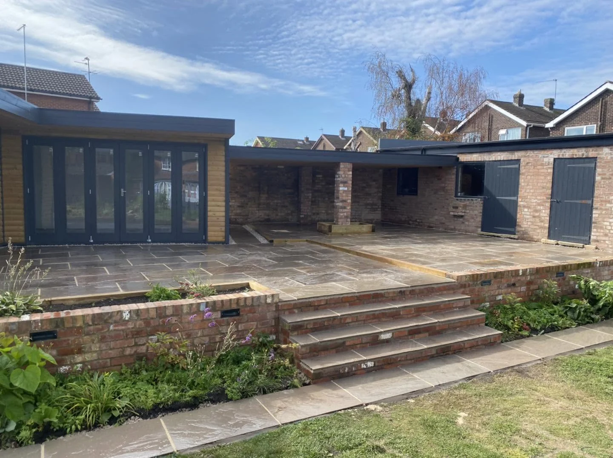
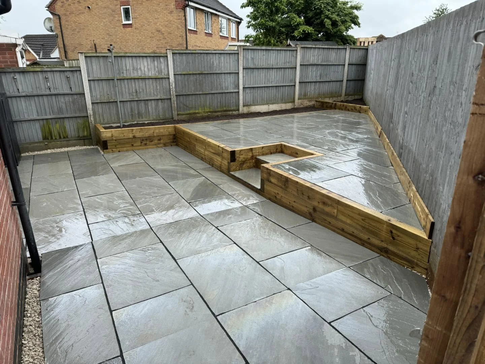

LM FENCING & LANDSCAPING · MANSFIELD
A garden you’ll
use more often.
Fencing, patios and landscaping in Mansfield and the surrounding area.
LM FENCING & LANDSCAPING
From the boundary
to the patio.
Whether you need more privacy, a place to sit or a fresh lawn, tell us what you’d like to change. We’ll talk through the options and offer a free, no-obligation quote.
Request a free quote →
OUTDOOR LIVING
Make room to sit outside.
See how paving, timber edging and privacy screens can define an outdoor seating area.
Explore patios →

OUR PROJECTS
See our recent work.
See examples from our projects. Select an image to see it in full.
FACEBOOK RECOMMENDATIONS
What customers say.
92% recommend on Facebook, based on 21 reviews shown on our profile.
“The quality of the work is fantastic.”
Maxine Lambert · Facebook
“Cleaned up and left place tidy.”
Kev Pattison · Facebook
“Fantastic fencing job done today!”
Adrian Cabourn-Hall · Facebook
“They did an amazing job, thanks again guys!”
Leanne Embleton · Facebook
BEFORE WE BEGIN
Good to know.
Do you offer free quotes?
Yes. Get in touch for a free, no-obligation quote.
What should I send for a quote?
Send your postcode, a short description and approximate dimensions if you have them. You can attach photos in WhatsApp.
Can I combine fencing and patio work?
Yes. Tell us about all the changes you have in mind so we can discuss the project together.
FREE QUOTES
Tell us about
your project.
Send us your location, approximate measurements and a few details about the work. You can attach photos in WhatsApp before sending.
Serving Mansfield and the surrounding area.
lmfencingandlandscaping@gmail.com
The form prepares a WhatsApp draft for you to review and send.